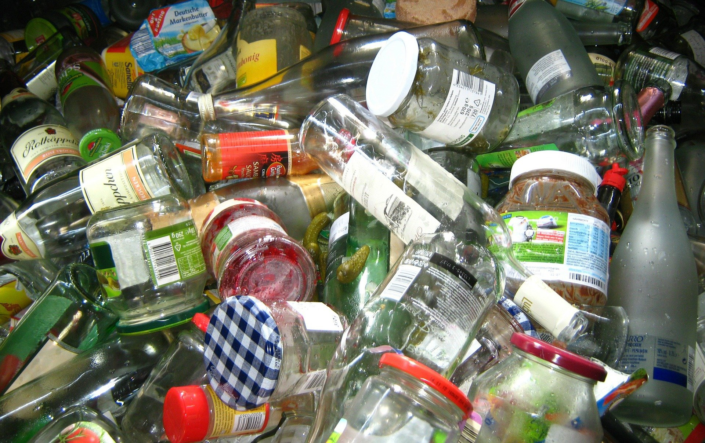

Descarte correto de residuos
Descarte e reciclagem de vidro
Os vidros não são biodegradáveis e permanecem na natureza por cerca de dez mil anos, mesmo sendo produzido por elementos naturais como sílica, presente na areia das praias, são elementos extremamente resistente às alterações climáticas, levando muito tempo para ser absorvido novamente pela natureza, assim aumentando o volume de “lixo” nos aterros sanitários. A grande preocupação é que o vidro, depois de quebrado, se torna um material perigoso que pode causar acidentes em humanos e animais.
O vidro é 100% reciclável
Entende-se como reciclagem de vidro o processo industrial de derretimento de resíduos de vidro para a fabricação de novos produtos, na maior parte das vezes, embalagens. Vidros reciclados são misturados com matéria-prima nova e, em média, as garrafas de vidro são compostas em cerca de 70% de vidro reciclado. Dependendo da cor, esse percentual ainda pode chegar a 90%. O vidro pode ser reciclado e reutilizado várias vezes, mantendo a qualidade original. Dessa forma, os resíduos de vidro são uma importante fonte de matéria-prima para a fabricação de novas embalagens de vidro. Portanto, NÃO DESCARTE EM LIXO COMUM!
A importância da reciclagem de vidro
- Diminuição do volume de lixo nos aterros sanitários (aumento da vida útil dos aterros)
- Com o reaproveitamento, a cada tonelada de vidro reciclado, gasta-se 70% menos de matéria-prima (recursos naturais) para fabricar mais vidro
- Gerador de renda para milhares de pessoas que atuam principalmente em cooperativas de catadores e recicladores de vidros e outros materiais
- Segundo a Abividro (Associação Brasileira das Indústrias de Vidro), a reciclagem do vidro no Brasil movimenta aproximadamente R$ 120 milhões no processo
Como descartar vidro corretamente
Leve seu vidro reciclável bem acondicionado em caixa de papelão ou embrulhado em jornal para minimizar o risco de quebra até o destino final. Leve de preferência enxaguado, sem tampa e sem rótulo para o local de descarte (coleta seletiva ou ecopontos). NÃO encaminhem vidros quebrados para a coleta seletiva.